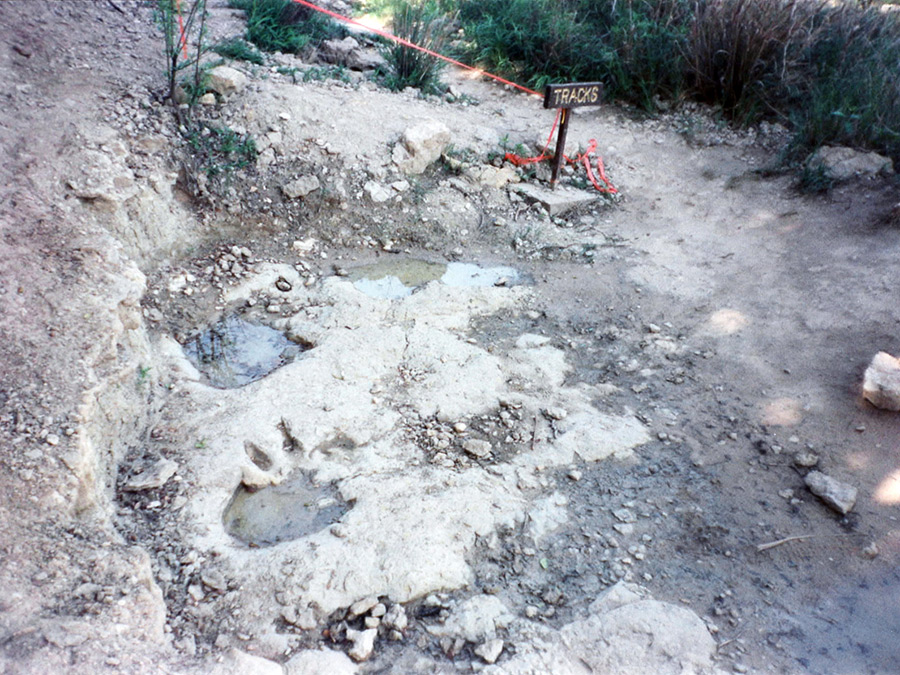

Dinosaur Valley State Park
Glen Rose, TX
Address: 1629 Park Road 59, Glen Rose, Texas 76043
Entry: $7/day for adults; free for children 12 and under (Recommended: TX State Park Pass)
Up-To-Date Info. on Park Status, Events, Activities, & Specific Area Maps: https://tpwd.texas.gov/state-parks/dinosaur-valley
Dinosaur Valley, just miles away from the town of Glen Rose, TX shares charms with many other TX state parks: breathtaking vistas, trails for hiking and exploring, fishing and swimming on the clear Paluxy River running through most of the park, and campsites to rest for another day of adventure. But, its unique point and namesake comes from the windows into prehistory that can be found across the park. Left impressed on the stone and paths are footprints from dinosaurs, in some of the most well preserved and prominent examples in the state.

Glen Rose proper has quite a few attractions as well, most notably Dinosaur World: A huge outdoor museum showing some of the many fossils found in the area, as well as life-size recreations of the prehistoric giants themselves.